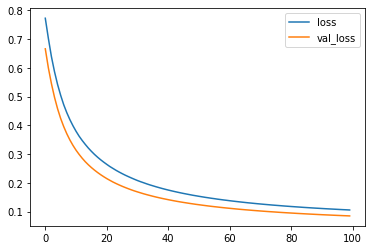
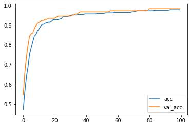

================ by Jawad Haider
Linear Classification¶
# Install TensorFlow
# !pip install -q tensorflow-gpu==2.0.0-beta1
try:
%tensorflow_version 2.x # Colab only.
except Exception:
pass
import tensorflow as tf
print(tf.__version__)
`%tensorflow_version` only switches the major version: 1.x or 2.x.
You set: `2.x # Colab only.`. This will be interpreted as: `2.x`.
TensorFlow 2.x selected.
2.5.0
sklearn.utils.Bunch
# note: it is a Bunch object
# this basically acts like a dictionary where you can treat the keys like attributes
data.keys()
dict_keys(['data', 'target', 'target_names', 'DESCR', 'feature_names', 'filename'])
(569, 30)
# 'targets'
data.target
# note how the targets are just 0s and 1s
# normally, when you have K targets, they are labeled 0..K-1
array([0, 0, 0, 0, 0, 0, 0, 0, 0, 0, 0, 0, 0, 0, 0, 0, 0, 0, 0, 1, 1, 1,
0, 0, 0, 0, 0, 0, 0, 0, 0, 0, 0, 0, 0, 0, 0, 1, 0, 0, 0, 0, 0, 0,
0, 0, 1, 0, 1, 1, 1, 1, 1, 0, 0, 1, 0, 0, 1, 1, 1, 1, 0, 1, 0, 0,
1, 1, 1, 1, 0, 1, 0, 0, 1, 0, 1, 0, 0, 1, 1, 1, 0, 0, 1, 0, 0, 0,
1, 1, 1, 0, 1, 1, 0, 0, 1, 1, 1, 0, 0, 1, 1, 1, 1, 0, 1, 1, 0, 1,
1, 1, 1, 1, 1, 1, 1, 0, 0, 0, 1, 0, 0, 1, 1, 1, 0, 0, 1, 0, 1, 0,
0, 1, 0, 0, 1, 1, 0, 1, 1, 0, 1, 1, 1, 1, 0, 1, 1, 1, 1, 1, 1, 1,
1, 1, 0, 1, 1, 1, 1, 0, 0, 1, 0, 1, 1, 0, 0, 1, 1, 0, 0, 1, 1, 1,
1, 0, 1, 1, 0, 0, 0, 1, 0, 1, 0, 1, 1, 1, 0, 1, 1, 0, 0, 1, 0, 0,
0, 0, 1, 0, 0, 0, 1, 0, 1, 0, 1, 1, 0, 1, 0, 0, 0, 0, 1, 1, 0, 0,
1, 1, 1, 0, 1, 1, 1, 1, 1, 0, 0, 1, 1, 0, 1, 1, 0, 0, 1, 0, 1, 1,
1, 1, 0, 1, 1, 1, 1, 1, 0, 1, 0, 0, 0, 0, 0, 0, 0, 0, 0, 0, 0, 0,
0, 0, 1, 1, 1, 1, 1, 1, 0, 1, 0, 1, 1, 0, 1, 1, 0, 1, 0, 0, 1, 1,
1, 1, 1, 1, 1, 1, 1, 1, 1, 1, 1, 0, 1, 1, 0, 1, 0, 1, 1, 1, 1, 1,
1, 1, 1, 1, 1, 1, 1, 1, 1, 0, 1, 1, 1, 0, 1, 0, 1, 1, 1, 1, 0, 0,
0, 1, 1, 1, 1, 0, 1, 0, 1, 0, 1, 1, 1, 0, 1, 1, 1, 1, 1, 1, 1, 0,
0, 0, 1, 1, 1, 1, 1, 1, 1, 1, 1, 1, 1, 0, 0, 1, 0, 0, 0, 1, 0, 0,
1, 1, 1, 1, 1, 0, 1, 1, 1, 1, 1, 0, 1, 1, 1, 0, 1, 1, 0, 0, 1, 1,
1, 1, 1, 1, 0, 1, 1, 1, 1, 1, 1, 1, 0, 1, 1, 1, 1, 1, 0, 1, 1, 0,
1, 1, 1, 1, 1, 1, 1, 1, 1, 1, 1, 1, 0, 1, 0, 0, 1, 0, 1, 1, 1, 1,
1, 0, 1, 1, 0, 1, 0, 1, 1, 0, 1, 0, 1, 1, 1, 1, 1, 1, 1, 1, 0, 0,
1, 1, 1, 1, 1, 1, 0, 1, 1, 1, 1, 1, 1, 1, 1, 1, 1, 0, 1, 1, 1, 1,
1, 1, 1, 0, 1, 0, 1, 1, 0, 1, 1, 1, 1, 1, 0, 0, 1, 0, 1, 0, 1, 1,
1, 1, 1, 0, 1, 1, 0, 1, 0, 1, 0, 0, 1, 1, 1, 0, 1, 1, 1, 1, 1, 1,
1, 1, 1, 1, 1, 0, 1, 0, 0, 1, 1, 1, 1, 1, 1, 1, 1, 1, 1, 1, 1, 1,
1, 1, 1, 1, 1, 1, 1, 1, 1, 1, 1, 1, 0, 0, 0, 0, 0, 0, 1])
array(['malignant', 'benign'], dtype='<U9')
(569,)
array(['mean radius', 'mean texture', 'mean perimeter', 'mean area',
'mean smoothness', 'mean compactness', 'mean concavity',
'mean concave points', 'mean symmetry', 'mean fractal dimension',
'radius error', 'texture error', 'perimeter error', 'area error',
'smoothness error', 'compactness error', 'concavity error',
'concave points error', 'symmetry error',
'fractal dimension error', 'worst radius', 'worst texture',
'worst perimeter', 'worst area', 'worst smoothness',
'worst compactness', 'worst concavity', 'worst concave points',
'worst symmetry', 'worst fractal dimension'], dtype='<U23')
# normally we would put all of our imports at the top
# but this lets us tell a story
from sklearn.model_selection import train_test_split
# split the data into train and test sets
# this lets us simulate how our model will perform in the future
X_train, X_test, y_train, y_test = train_test_split(data.data, data.target, test_size=0.33)
N, D = X_train.shape
# Scale the data
# you'll learn why scaling is needed in a later course
from sklearn.preprocessing import StandardScaler
scaler = StandardScaler()
X_train = scaler.fit_transform(X_train)
X_test = scaler.transform(X_test)
# Now all the fun Tensorflow stuff
# Build the model
model = tf.keras.models.Sequential([
tf.keras.layers.Input(shape=(D,)),
tf.keras.layers.Dense(1, activation='sigmoid')
])
# Alternatively, you can do:
# model = tf.keras.models.Sequential()
# model.add(tf.keras.layers.Dense(1, input_shape=(D,), activation='sigmoid'))
model.compile(optimizer='adam',
loss='binary_crossentropy',
metrics=['accuracy'])
# Train the model
r = model.fit(X_train, y_train, validation_data=(X_test, y_test), epochs=100)
# Evaluate the model - evaluate() returns loss and accuracy
print("Train score:", model.evaluate(X_train, y_train))
print("Test score:", model.evaluate(X_test, y_test))
WARNING:tensorflow:Please add `keras.layers.InputLayer` instead of `keras.Input` to Sequential model. `keras.Input` is intended to be used by Functional model.
Epoch 1/100
12/12 [==============================] - 3s 17ms/step - loss: 0.7727 - accuracy: 0.4724 - val_loss: 0.6664 - val_accuracy: 0.5479
Epoch 2/100
12/12 [==============================] - 0s 5ms/step - loss: 0.7026 - accuracy: 0.5643 - val_loss: 0.6001 - val_accuracy: 0.6596
Epoch 3/100
12/12 [==============================] - 0s 4ms/step - loss: 0.6389 - accuracy: 0.6378 - val_loss: 0.5451 - val_accuracy: 0.7394
Epoch 4/100
12/12 [==============================] - 0s 5ms/step - loss: 0.5867 - accuracy: 0.6877 - val_loss: 0.4977 - val_accuracy: 0.7979
Epoch 5/100
12/12 [==============================] - 0s 4ms/step - loss: 0.5422 - accuracy: 0.7559 - val_loss: 0.4578 - val_accuracy: 0.8457
Epoch 6/100
12/12 [==============================] - 0s 6ms/step - loss: 0.5047 - accuracy: 0.7848 - val_loss: 0.4241 - val_accuracy: 0.8564
Epoch 7/100
12/12 [==============================] - 0s 5ms/step - loss: 0.4718 - accuracy: 0.8163 - val_loss: 0.3957 - val_accuracy: 0.8617
Epoch 8/100
12/12 [==============================] - 0s 4ms/step - loss: 0.4442 - accuracy: 0.8451 - val_loss: 0.3710 - val_accuracy: 0.8830
Epoch 9/100
12/12 [==============================] - 0s 6ms/step - loss: 0.4201 - accuracy: 0.8530 - val_loss: 0.3494 - val_accuracy: 0.8989
Epoch 10/100
12/12 [==============================] - 0s 6ms/step - loss: 0.3989 - accuracy: 0.8714 - val_loss: 0.3305 - val_accuracy: 0.9096
Epoch 11/100
12/12 [==============================] - 0s 4ms/step - loss: 0.3797 - accuracy: 0.8819 - val_loss: 0.3139 - val_accuracy: 0.9149
Epoch 12/100
12/12 [==============================] - 0s 4ms/step - loss: 0.3626 - accuracy: 0.8950 - val_loss: 0.2993 - val_accuracy: 0.9202
Epoch 13/100
12/12 [==============================] - 0s 5ms/step - loss: 0.3477 - accuracy: 0.9055 - val_loss: 0.2859 - val_accuracy: 0.9255
Epoch 14/100
12/12 [==============================] - 0s 4ms/step - loss: 0.3341 - accuracy: 0.9055 - val_loss: 0.2739 - val_accuracy: 0.9255
Epoch 15/100
12/12 [==============================] - 0s 4ms/step - loss: 0.3213 - accuracy: 0.9108 - val_loss: 0.2632 - val_accuracy: 0.9309
Epoch 16/100
12/12 [==============================] - 0s 5ms/step - loss: 0.3099 - accuracy: 0.9134 - val_loss: 0.2534 - val_accuracy: 0.9309
Epoch 17/100
12/12 [==============================] - 0s 4ms/step - loss: 0.2992 - accuracy: 0.9160 - val_loss: 0.2446 - val_accuracy: 0.9362
Epoch 18/100
12/12 [==============================] - 0s 4ms/step - loss: 0.2896 - accuracy: 0.9160 - val_loss: 0.2363 - val_accuracy: 0.9362
Epoch 19/100
12/12 [==============================] - 0s 5ms/step - loss: 0.2806 - accuracy: 0.9213 - val_loss: 0.2287 - val_accuracy: 0.9362
Epoch 20/100
12/12 [==============================] - 0s 5ms/step - loss: 0.2723 - accuracy: 0.9291 - val_loss: 0.2217 - val_accuracy: 0.9362
Epoch 21/100
12/12 [==============================] - 0s 4ms/step - loss: 0.2645 - accuracy: 0.9291 - val_loss: 0.2151 - val_accuracy: 0.9362
Epoch 22/100
12/12 [==============================] - 0s 4ms/step - loss: 0.2571 - accuracy: 0.9291 - val_loss: 0.2091 - val_accuracy: 0.9415
Epoch 23/100
12/12 [==============================] - 0s 4ms/step - loss: 0.2505 - accuracy: 0.9291 - val_loss: 0.2033 - val_accuracy: 0.9468
Epoch 24/100
12/12 [==============================] - 0s 4ms/step - loss: 0.2440 - accuracy: 0.9318 - val_loss: 0.1980 - val_accuracy: 0.9468
Epoch 25/100
12/12 [==============================] - 0s 4ms/step - loss: 0.2380 - accuracy: 0.9344 - val_loss: 0.1931 - val_accuracy: 0.9468
Epoch 26/100
12/12 [==============================] - 0s 5ms/step - loss: 0.2323 - accuracy: 0.9423 - val_loss: 0.1884 - val_accuracy: 0.9468
Epoch 27/100
12/12 [==============================] - 0s 4ms/step - loss: 0.2270 - accuracy: 0.9449 - val_loss: 0.1841 - val_accuracy: 0.9468
Epoch 28/100
12/12 [==============================] - 0s 6ms/step - loss: 0.2221 - accuracy: 0.9449 - val_loss: 0.1799 - val_accuracy: 0.9468
Epoch 29/100
12/12 [==============================] - 0s 6ms/step - loss: 0.2173 - accuracy: 0.9449 - val_loss: 0.1759 - val_accuracy: 0.9468
Epoch 30/100
12/12 [==============================] - 0s 4ms/step - loss: 0.2127 - accuracy: 0.9475 - val_loss: 0.1722 - val_accuracy: 0.9468
Epoch 31/100
12/12 [==============================] - 0s 5ms/step - loss: 0.2083 - accuracy: 0.9501 - val_loss: 0.1688 - val_accuracy: 0.9468
Epoch 32/100
12/12 [==============================] - 0s 4ms/step - loss: 0.2043 - accuracy: 0.9528 - val_loss: 0.1655 - val_accuracy: 0.9521
Epoch 33/100
12/12 [==============================] - 0s 4ms/step - loss: 0.2006 - accuracy: 0.9528 - val_loss: 0.1622 - val_accuracy: 0.9521
Epoch 34/100
12/12 [==============================] - 0s 6ms/step - loss: 0.1968 - accuracy: 0.9528 - val_loss: 0.1592 - val_accuracy: 0.9574
Epoch 35/100
12/12 [==============================] - 0s 4ms/step - loss: 0.1932 - accuracy: 0.9528 - val_loss: 0.1564 - val_accuracy: 0.9574
Epoch 36/100
12/12 [==============================] - 0s 6ms/step - loss: 0.1900 - accuracy: 0.9554 - val_loss: 0.1536 - val_accuracy: 0.9628
Epoch 37/100
12/12 [==============================] - 0s 5ms/step - loss: 0.1867 - accuracy: 0.9554 - val_loss: 0.1510 - val_accuracy: 0.9681
Epoch 38/100
12/12 [==============================] - 0s 4ms/step - loss: 0.1837 - accuracy: 0.9554 - val_loss: 0.1486 - val_accuracy: 0.9681
Epoch 39/100
12/12 [==============================] - 0s 6ms/step - loss: 0.1807 - accuracy: 0.9554 - val_loss: 0.1462 - val_accuracy: 0.9681
Epoch 40/100
12/12 [==============================] - 0s 5ms/step - loss: 0.1779 - accuracy: 0.9580 - val_loss: 0.1439 - val_accuracy: 0.9681
Epoch 41/100
12/12 [==============================] - 0s 5ms/step - loss: 0.1752 - accuracy: 0.9580 - val_loss: 0.1418 - val_accuracy: 0.9681
Epoch 42/100
12/12 [==============================] - 0s 5ms/step - loss: 0.1727 - accuracy: 0.9580 - val_loss: 0.1396 - val_accuracy: 0.9681
Epoch 43/100
12/12 [==============================] - 0s 6ms/step - loss: 0.1702 - accuracy: 0.9580 - val_loss: 0.1376 - val_accuracy: 0.9681
Epoch 44/100
12/12 [==============================] - 0s 5ms/step - loss: 0.1678 - accuracy: 0.9580 - val_loss: 0.1357 - val_accuracy: 0.9681
Epoch 45/100
12/12 [==============================] - 0s 4ms/step - loss: 0.1655 - accuracy: 0.9580 - val_loss: 0.1338 - val_accuracy: 0.9681
Epoch 46/100
12/12 [==============================] - 0s 4ms/step - loss: 0.1633 - accuracy: 0.9580 - val_loss: 0.1321 - val_accuracy: 0.9681
Epoch 47/100
12/12 [==============================] - 0s 4ms/step - loss: 0.1613 - accuracy: 0.9580 - val_loss: 0.1304 - val_accuracy: 0.9681
Epoch 48/100
12/12 [==============================] - 0s 5ms/step - loss: 0.1592 - accuracy: 0.9606 - val_loss: 0.1287 - val_accuracy: 0.9681
Epoch 49/100
12/12 [==============================] - 0s 4ms/step - loss: 0.1571 - accuracy: 0.9606 - val_loss: 0.1272 - val_accuracy: 0.9681
Epoch 50/100
12/12 [==============================] - 0s 4ms/step - loss: 0.1553 - accuracy: 0.9606 - val_loss: 0.1256 - val_accuracy: 0.9681
Epoch 51/100
12/12 [==============================] - 0s 5ms/step - loss: 0.1535 - accuracy: 0.9606 - val_loss: 0.1242 - val_accuracy: 0.9681
Epoch 52/100
12/12 [==============================] - 0s 4ms/step - loss: 0.1517 - accuracy: 0.9606 - val_loss: 0.1227 - val_accuracy: 0.9681
Epoch 53/100
12/12 [==============================] - 0s 5ms/step - loss: 0.1500 - accuracy: 0.9633 - val_loss: 0.1213 - val_accuracy: 0.9681
Epoch 54/100
12/12 [==============================] - 0s 5ms/step - loss: 0.1484 - accuracy: 0.9633 - val_loss: 0.1199 - val_accuracy: 0.9681
Epoch 55/100
12/12 [==============================] - 0s 5ms/step - loss: 0.1467 - accuracy: 0.9633 - val_loss: 0.1186 - val_accuracy: 0.9681
Epoch 56/100
12/12 [==============================] - 0s 6ms/step - loss: 0.1453 - accuracy: 0.9633 - val_loss: 0.1174 - val_accuracy: 0.9734
Epoch 57/100
12/12 [==============================] - 0s 4ms/step - loss: 0.1436 - accuracy: 0.9633 - val_loss: 0.1162 - val_accuracy: 0.9734
Epoch 58/100
12/12 [==============================] - 0s 4ms/step - loss: 0.1423 - accuracy: 0.9633 - val_loss: 0.1150 - val_accuracy: 0.9734
Epoch 59/100
12/12 [==============================] - 0s 4ms/step - loss: 0.1408 - accuracy: 0.9659 - val_loss: 0.1139 - val_accuracy: 0.9734
Epoch 60/100
12/12 [==============================] - 0s 4ms/step - loss: 0.1395 - accuracy: 0.9659 - val_loss: 0.1127 - val_accuracy: 0.9734
Epoch 61/100
12/12 [==============================] - 0s 4ms/step - loss: 0.1381 - accuracy: 0.9659 - val_loss: 0.1117 - val_accuracy: 0.9734
Epoch 62/100
12/12 [==============================] - 0s 5ms/step - loss: 0.1368 - accuracy: 0.9659 - val_loss: 0.1107 - val_accuracy: 0.9734
Epoch 63/100
12/12 [==============================] - 0s 4ms/step - loss: 0.1356 - accuracy: 0.9659 - val_loss: 0.1096 - val_accuracy: 0.9734
Epoch 64/100
12/12 [==============================] - 0s 4ms/step - loss: 0.1344 - accuracy: 0.9659 - val_loss: 0.1086 - val_accuracy: 0.9734
Epoch 65/100
12/12 [==============================] - 0s 4ms/step - loss: 0.1332 - accuracy: 0.9659 - val_loss: 0.1077 - val_accuracy: 0.9734
Epoch 66/100
12/12 [==============================] - 0s 5ms/step - loss: 0.1320 - accuracy: 0.9659 - val_loss: 0.1067 - val_accuracy: 0.9734
Epoch 67/100
12/12 [==============================] - 0s 5ms/step - loss: 0.1309 - accuracy: 0.9659 - val_loss: 0.1059 - val_accuracy: 0.9734
Epoch 68/100
12/12 [==============================] - 0s 5ms/step - loss: 0.1299 - accuracy: 0.9659 - val_loss: 0.1050 - val_accuracy: 0.9734
Epoch 69/100
12/12 [==============================] - 0s 4ms/step - loss: 0.1288 - accuracy: 0.9659 - val_loss: 0.1041 - val_accuracy: 0.9734
Epoch 70/100
12/12 [==============================] - 0s 5ms/step - loss: 0.1277 - accuracy: 0.9685 - val_loss: 0.1033 - val_accuracy: 0.9734
Epoch 71/100
12/12 [==============================] - 0s 4ms/step - loss: 0.1267 - accuracy: 0.9685 - val_loss: 0.1024 - val_accuracy: 0.9734
Epoch 72/100
12/12 [==============================] - 0s 4ms/step - loss: 0.1258 - accuracy: 0.9711 - val_loss: 0.1016 - val_accuracy: 0.9734
Epoch 73/100
12/12 [==============================] - 0s 5ms/step - loss: 0.1248 - accuracy: 0.9738 - val_loss: 0.1008 - val_accuracy: 0.9734
Epoch 74/100
12/12 [==============================] - 0s 4ms/step - loss: 0.1239 - accuracy: 0.9738 - val_loss: 0.1001 - val_accuracy: 0.9734
Epoch 75/100
12/12 [==============================] - 0s 5ms/step - loss: 0.1230 - accuracy: 0.9738 - val_loss: 0.0994 - val_accuracy: 0.9734
Epoch 76/100
12/12 [==============================] - 0s 5ms/step - loss: 0.1221 - accuracy: 0.9738 - val_loss: 0.0987 - val_accuracy: 0.9734
Epoch 77/100
12/12 [==============================] - 0s 4ms/step - loss: 0.1213 - accuracy: 0.9738 - val_loss: 0.0979 - val_accuracy: 0.9734
Epoch 78/100
12/12 [==============================] - 0s 5ms/step - loss: 0.1204 - accuracy: 0.9738 - val_loss: 0.0972 - val_accuracy: 0.9734
Epoch 79/100
12/12 [==============================] - 0s 4ms/step - loss: 0.1196 - accuracy: 0.9738 - val_loss: 0.0966 - val_accuracy: 0.9734
Epoch 80/100
12/12 [==============================] - 0s 4ms/step - loss: 0.1188 - accuracy: 0.9738 - val_loss: 0.0959 - val_accuracy: 0.9787
Epoch 81/100
12/12 [==============================] - 0s 5ms/step - loss: 0.1180 - accuracy: 0.9738 - val_loss: 0.0953 - val_accuracy: 0.9840
Epoch 82/100
12/12 [==============================] - 0s 5ms/step - loss: 0.1173 - accuracy: 0.9738 - val_loss: 0.0947 - val_accuracy: 0.9840
Epoch 83/100
12/12 [==============================] - 0s 5ms/step - loss: 0.1165 - accuracy: 0.9738 - val_loss: 0.0940 - val_accuracy: 0.9840
Epoch 84/100
12/12 [==============================] - 0s 5ms/step - loss: 0.1158 - accuracy: 0.9764 - val_loss: 0.0934 - val_accuracy: 0.9840
Epoch 85/100
12/12 [==============================] - 0s 5ms/step - loss: 0.1150 - accuracy: 0.9764 - val_loss: 0.0928 - val_accuracy: 0.9840
Epoch 86/100
12/12 [==============================] - 0s 5ms/step - loss: 0.1143 - accuracy: 0.9764 - val_loss: 0.0923 - val_accuracy: 0.9840
Epoch 87/100
12/12 [==============================] - 0s 5ms/step - loss: 0.1137 - accuracy: 0.9764 - val_loss: 0.0917 - val_accuracy: 0.9840
Epoch 88/100
12/12 [==============================] - 0s 5ms/step - loss: 0.1130 - accuracy: 0.9764 - val_loss: 0.0912 - val_accuracy: 0.9840
Epoch 89/100
12/12 [==============================] - 0s 5ms/step - loss: 0.1123 - accuracy: 0.9764 - val_loss: 0.0906 - val_accuracy: 0.9840
Epoch 90/100
12/12 [==============================] - 0s 4ms/step - loss: 0.1117 - accuracy: 0.9764 - val_loss: 0.0900 - val_accuracy: 0.9840
Epoch 91/100
12/12 [==============================] - 0s 5ms/step - loss: 0.1111 - accuracy: 0.9764 - val_loss: 0.0895 - val_accuracy: 0.9840
Epoch 92/100
12/12 [==============================] - 0s 5ms/step - loss: 0.1104 - accuracy: 0.9764 - val_loss: 0.0890 - val_accuracy: 0.9840
Epoch 93/100
12/12 [==============================] - 0s 4ms/step - loss: 0.1098 - accuracy: 0.9764 - val_loss: 0.0886 - val_accuracy: 0.9840
Epoch 94/100
12/12 [==============================] - 0s 6ms/step - loss: 0.1093 - accuracy: 0.9790 - val_loss: 0.0881 - val_accuracy: 0.9840
Epoch 95/100
12/12 [==============================] - 0s 5ms/step - loss: 0.1087 - accuracy: 0.9790 - val_loss: 0.0876 - val_accuracy: 0.9840
Epoch 96/100
12/12 [==============================] - 0s 4ms/step - loss: 0.1081 - accuracy: 0.9790 - val_loss: 0.0871 - val_accuracy: 0.9840
Epoch 97/100
12/12 [==============================] - 0s 5ms/step - loss: 0.1075 - accuracy: 0.9790 - val_loss: 0.0866 - val_accuracy: 0.9840
Epoch 98/100
12/12 [==============================] - 0s 5ms/step - loss: 0.1070 - accuracy: 0.9790 - val_loss: 0.0862 - val_accuracy: 0.9840
Epoch 99/100
12/12 [==============================] - 0s 6ms/step - loss: 0.1065 - accuracy: 0.9790 - val_loss: 0.0858 - val_accuracy: 0.9840
Epoch 100/100
12/12 [==============================] - 0s 4ms/step - loss: 0.1059 - accuracy: 0.9790 - val_loss: 0.0853 - val_accuracy: 0.9840
12/12 [==============================] - 0s 2ms/step - loss: 0.1056 - accuracy: 0.9790
Train score: [0.10559554398059845, 0.9790025949478149]
6/6 [==============================] - 0s 2ms/step - loss: 0.0853 - accuracy: 0.9840
Test score: [0.08529960364103317, 0.9840425252914429]
# Plot what's returned by model.fit()
import matplotlib.pyplot as plt
plt.plot(r.history['loss'], label='loss')
plt.plot(r.history['val_loss'], label='val_loss')
plt.legend()
<matplotlib.legend.Legend at 0x7f75702b9790>

# Plot the accuracy too
plt.plot(r.history['accuracy'], label='acc')
plt.plot(r.history['val_accuracy'], label='val_acc')
plt.legend()
<matplotlib.legend.Legend at 0x7f75701ec310>

Part 2: Making Predictions¶
This goes with the lecture “Making Predictions”
# Make predictions
P = model.predict(X_test)
print(P) # they are outputs of the sigmoid, interpreted as probabilities p(y = 1 | x)
[[9.35080469e-01]
[9.99298692e-01]
[9.98439729e-01]
[9.77653563e-01]
[5.64797297e-02]
[1.55710494e-02]
[6.10508978e-01]
[8.52784812e-01]
[9.31189537e-01]
[9.98825729e-01]
[8.09484124e-01]
[9.13891383e-03]
[9.96914744e-01]
[9.93904889e-01]
[9.81451333e-01]
[9.55752373e-01]
[2.45447876e-03]
[4.61153733e-03]
[5.73845464e-04]
[2.48237103e-02]
[9.90265667e-01]
[3.78944203e-02]
[9.94276583e-01]
[9.98708129e-01]
[9.61843669e-01]
[9.87939239e-01]
[9.99808848e-01]
[9.96969759e-01]
[2.85914261e-02]
[9.56589937e-01]
[9.60226953e-01]
[2.69837608e-03]
[9.96669829e-01]
[9.84309673e-01]
[3.50100487e-01]
[8.31614912e-01]
[9.95373189e-01]
[2.96407286e-03]
[9.67374027e-01]
[9.73011911e-01]
[9.94610310e-01]
[4.85418539e-04]
[8.88491213e-01]
[9.84727025e-01]
[8.90673800e-06]
[9.98509824e-01]
[4.42464858e-01]
[1.32060540e-03]
[1.17375106e-01]
[8.27795267e-01]
[3.74988168e-01]
[1.91124864e-02]
[9.95917022e-01]
[9.98196542e-01]
[4.74949419e-01]
[8.22081923e-01]
[8.90725613e-01]
[9.98178959e-01]
[1.02176724e-04]
[1.82664804e-02]
[9.50180948e-01]
[1.43383248e-02]
[9.42624748e-01]
[5.96681166e-05]
[9.99727428e-01]
[9.69099402e-01]
[2.24412568e-02]
[3.96199212e-05]
[3.38991098e-02]
[9.91276979e-01]
[9.91171777e-01]
[9.82203007e-01]
[6.71500042e-02]
[9.87396777e-01]
[5.30279765e-04]
[9.57228303e-01]
[9.98355210e-01]
[9.14368153e-01]
[9.52866495e-01]
[9.97870207e-01]
[1.34615432e-02]
[2.44203299e-01]
[8.79299402e-01]
[9.77223754e-01]
[9.28715587e-01]
[2.52999127e-01]
[2.69606203e-01]
[9.99876618e-01]
[1.51222537e-03]
[9.53690171e-01]
[4.03010815e-01]
[9.98407781e-01]
[6.50674924e-02]
[9.99741018e-01]
[1.14408717e-01]
[8.39701653e-01]
[9.96540427e-01]
[8.24299932e-01]
[1.20999947e-01]
[9.98341918e-01]
[9.98978138e-01]
[9.87704277e-01]
[9.43565965e-01]
[9.89912093e-01]
[9.82849538e-01]
[1.31196016e-03]
[4.07409249e-03]
[6.24320284e-03]
[7.39843130e-01]
[9.90274429e-01]
[9.96425331e-01]
[4.27843165e-03]
[9.28301930e-01]
[9.49783742e-01]
[9.80192959e-01]
[8.80274863e-04]
[9.91823375e-01]
[9.76207674e-01]
[9.17195439e-01]
[9.98508751e-01]
[9.27063286e-01]
[6.56274676e-01]
[9.99204099e-01]
[9.82241213e-01]
[9.71006870e-01]
[9.63477552e-01]
[9.98024106e-01]
[9.99295473e-01]
[9.87832904e-01]
[3.22171450e-02]
[8.78069401e-01]
[4.87438217e-02]
[9.59760249e-01]
[1.59445778e-01]
[4.66189593e-01]
[9.82630789e-01]
[9.93440092e-01]
[2.06552606e-04]
[9.97168481e-01]
[9.90759015e-01]
[9.95073020e-01]
[9.30102646e-01]
[2.89134146e-03]
[9.88580644e-01]
[9.95565474e-01]
[9.84212875e-01]
[2.23457310e-02]
[9.83895898e-01]
[6.18342310e-04]
[9.98992264e-01]
[9.94715989e-01]
[3.41228060e-02]
[2.80370237e-04]
[4.87311219e-04]
[9.97160077e-01]
[8.87251318e-01]
[9.65952098e-01]
[9.75660741e-01]
[9.93650138e-01]
[4.88551438e-01]
[2.07821256e-03]
[7.25426733e-01]
[6.17845356e-03]
[4.90195416e-05]
[8.92993286e-02]
[8.22957635e-01]
[9.97866690e-01]
[2.30895057e-02]
[9.76001143e-01]
[6.94513857e-01]
[6.79192960e-01]
[9.77537930e-01]
[9.90081012e-01]
[9.98470843e-01]
[9.93132412e-01]
[2.66570807e-03]
[9.49018478e-01]
[9.90014315e-01]
[2.29099810e-01]
[9.10406351e-01]
[9.98505592e-01]
[9.42158282e-01]
[9.24770832e-01]
[9.11253691e-01]
[9.84513938e-01]
[9.97072697e-01]
[7.51034081e-01]
[9.97907519e-01]]
# Round to get the actual predictions
# Note: has to be flattened since the targets are size (N,) while the predictions are size (N,1)
import numpy as np
P = np.round(P).flatten()
print(P)
[1. 1. 1. 1. 0. 0. 1. 1. 1. 1. 1. 0. 1. 1. 1. 1. 0. 0. 0. 0. 1. 0. 1. 1.
1. 1. 1. 1. 0. 1. 1. 0. 1. 1. 0. 1. 1. 0. 1. 1. 1. 0. 1. 1. 0. 1. 0. 0.
0. 1. 0. 0. 1. 1. 0. 1. 1. 1. 0. 0. 1. 0. 1. 0. 1. 1. 0. 0. 0. 1. 1. 1.
0. 1. 0. 1. 1. 1. 1. 1. 0. 0. 1. 1. 1. 0. 0. 1. 0. 1. 0. 1. 0. 1. 0. 1.
1. 1. 0. 1. 1. 1. 1. 1. 1. 0. 0. 0. 1. 1. 1. 0. 1. 1. 1. 0. 1. 1. 1. 1.
1. 1. 1. 1. 1. 1. 1. 1. 1. 0. 1. 0. 1. 0. 0. 1. 1. 0. 1. 1. 1. 1. 0. 1.
1. 1. 0. 1. 0. 1. 1. 0. 0. 0. 1. 1. 1. 1. 1. 0. 0. 1. 0. 0. 0. 1. 1. 0.
1. 1. 1. 1. 1. 1. 1. 0. 1. 1. 0. 1. 1. 1. 1. 1. 1. 1. 1. 1.]
# Calculate the accuracy, compare it to evaluate() output
print("Manually calculated accuracy:", np.mean(P == y_test))
print("Evaluate output:", model.evaluate(X_test, y_test))
Manually calculated accuracy: 0.9840425531914894
6/6 [==============================] - 0s 2ms/step - loss: 0.0853 - accuracy: 0.9840
Evaluate output: [0.08529960364103317, 0.9840425252914429]
Part 3: Saving and Loading a Model¶
This goes with the lecture “Saving and Loading a Model”
total 24K
-rw-r--r-- 1 root root 19K Jul 18 20:05 linearclassifier.h5
drwxr-xr-x 1 root root 4.0K Jul 15 13:38 sample_data
# Let's load the model and confirm that it still works
# Note: there is a bug in Keras where load/save only works if you DON'T use the Input() layer explicitly
# So, make sure you define the model with ONLY Dense(1, input_shape=(D,))
# At least, until the bug is fixed
# https://github.com/keras-team/keras/issues/10417
model = tf.keras.models.load_model('linearclassifier.h5')
print(model.layers)
model.evaluate(X_test, y_test)
[<tensorflow.python.keras.layers.core.Dense object at 0x7f7570102f50>]
6/6 [==============================] - 0s 2ms/step - loss: 0.0853 - accuracy: 0.9840
[0.08529960364103317, 0.9840425252914429]
# Download the file - requires Chrome (at this point)
from google.colab import files
files.download('linearclassifier.h5')
<IPython.core.display.Javascript object>
<IPython.core.display.Javascript object>